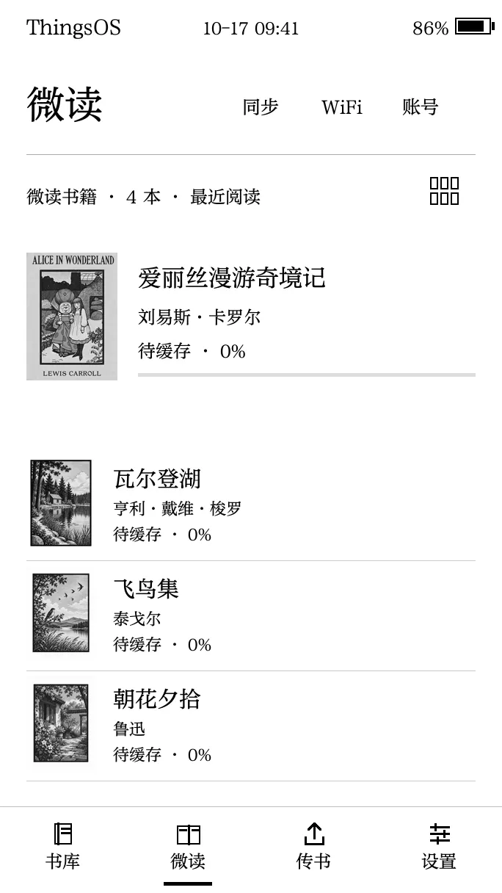
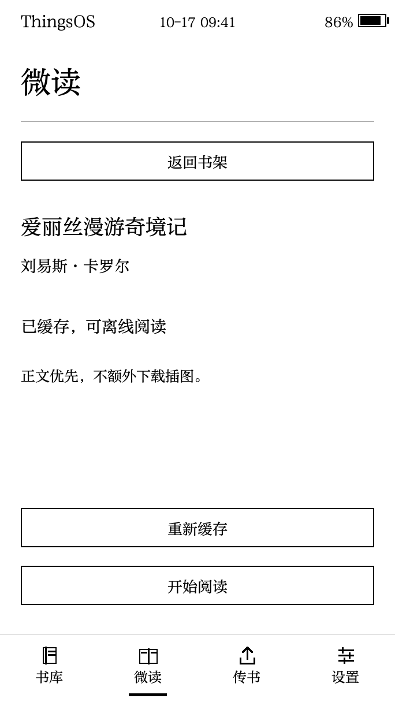

THINGSOS · 为墨水屏阅读打造的系统
让每一页，合你心意。 收好喜欢的书，调成舒服的排版，安心读下去。
喜欢的文字，TAKE YOUR TIME.
READ. 01 / 微信读书，也有了墨水屏的安静 微信里的书， 手机里的个人书架，现在可以带到墨水屏。
1 微信扫码，登录自己的账号 连接 WiFi，进入设备「微读」，用微信扫码并确认登录。
2 同步书架，选择想读的书 在个人书架中选择账号可访问的书籍，按需缓存到 SD 卡。
3 缓存完成，离线也能继续读 已缓存书籍集中显示在书库「微读」标签，断网也能打开阅读。
通过非官方适配连接微信读书，仅缓存账号有权访问的内容。开发中的划线与同步功能会读取账号的划线/书评，并会写回阅读进度与时长（可关闭，时长首次启用需确认）。可用范围受书籍权限和服务接口影响。

↗ 
↗ 点击放大 · 当前固件界面渲染，使用示例书籍
多读懂一点，也多连贯一点
好文字的回声， 划线、想法、注释与时长，
01 / 微信读书热门划线
读到一句话， 缓存书籍中的热门划线会在正文里标出。点开感兴趣的段落，查看这段文字下的读者想法。
查看完整截图 ↗ 02 / 划线想法浮窗
想法展开， 划线原文、读者和想法正文分层呈现。列表、全文和翻页都在浮窗里完成，关闭后继续读这一页。
查看完整截图 ↗ 阅读时长上报 04 04 / 阅读时长上报
本地缓存阅读， 缓存到本地的微信读书书籍，也能记录有效阅读时长。连接 Wi-Fi 并开启上报后，可将阅读时长提交至微信读书服务端；阅读中定期提交，退出时提交余量。
查看完整截图 ↗ 点击设备，查看完整截图。效果图由 0.3.5 固件界面绘制，书籍、想法及同步状态为示例内容。
02 / 每天都用得上的细节 读得自在， 从打开一本书，到记住读过的时光，
01 你的书，有自己的位置 EPUB 与 TXT 放进同一个书库，列表与封面视图随心切换。继续上次阅读，也能通过章节和书签回到想看的地方。
统一书库 章节目录 书签与进度
02 让文字，合你的眼缘 字体、字号、字重、行距与页边距都能调整。普通翻页可开启水波纹，定期全刷保持画面清晰，全刷周期由你选择。
默认字号 46 自定义字体 翻页水波纹
03 每一页，都留下足迹 查看每日阅读时长、每周趋势与阅读热力图。锁屏可以是阅读统计、指定书籍的封面，也可以是你喜欢的一张图片。
阅读统计 封面锁屏 自选壁纸
03 / 屏幕里的样子
简单，好读。 点击图片，放大看看。固件界面渲染预览，书籍与统计为示例数据。
EPUB一本新书 · · · · → TXT一段好文字
不止一种传书方式 好书来了， 开启设备上的传书服务，按屏幕提示连接热点或同一 WiFi，用手机、电脑浏览器就能上传书籍。也可以直接把书籍放入 SD 卡。
设备热点：ThingsOS · 密码：picoread
更多字体放进 /fonts，喜欢的壁纸放进 /wallpapers。
05 / 让阅读开始 给阅读器， 一根 USB 数据线，一个电脑浏览器，
思维重置 Read Pico RDP-G01-W · ESP32-S3 · 16 MB 无名科技 E-INK4 PLUS ESP32-S31 · 16 MB
1 连接阅读器 使用支持数据传输的 USB 线连接电脑。
2 选择设备串口 在电脑 Chrome 或 Edge 中打开本页，确认型号后连接。
3 安装，开始阅读 按向导写入固件，保持连接，等待设备启动。
CURRENT RELEASE 正式版
ThingsOS 0.4.2 相比 0.4.1 的更新 新增顶部下拉控制中心与 6 位锁屏密码（PBKDF2-HMAC-SHA256 验证），保护开机与唤醒后的书架及个人数据。 新增低功耗蓝牙（BLE）键盘与翻页器支持，兼容扫描、配对与自动重连，并在关键 GC16 全屏/切页刷新期间暂停后台扫描与重连以降低欠载风险。 应用页集成 Cubox 与 flomo，支持手机扫码/局域网配对绑定、分类筛选与文章/笔记同步阅读，并优化配对提交后的内部 SRAM 释放。 新增「系统」两页实时监控（SRAM/DMA/PSRAM/Flash 与像素时钟/欠载恢复状态）及运行诊断导出，支持微读离线阅读时长（ReadTime）同步恢复。 精简蓝牙控制器与网络/USB 内存占用，微读章节/整本缓存、本地 TXT 排版与壁纸预览细节持续优化。
适用设备 Read Pico · RDP-G01-W
安装方式 USB · 电脑 Chrome / Edge 手机版支持浏览和下载固件；USB 在线安装请在电脑 Chrome 或 Edge 中打开本页。
我已确认设备型号并备份重要数据。完整安装会重置设备内部设置，SD 卡书籍保留。 连接设备并安装 ↗ 在线安装需要通过 HTTPS 在电脑 Chrome 或 Edge 中打开。你仍可下载下方固件。
正在检查安装包，请稍候…
固件写入进度 连接设备 擦除 Flash 更新固件 重启设备 每一步，都留有记录
历史版本更新记录 仅保留更新日志，
E-INK4 PLUS
v0.1.6 2026-11-09 相比 0.1.5 的更新
显示：移除黑底白字的黑白模式开关，升级后恢复正常显示。保留原有首页与阅读刷新设置。 Wi-Fi：提交连接后独立计时，最多尝试 4 次。扫描和输入密码不占用连接时间，连接失败后仍可扫描和使用传书热点。 EPUB：ZIP 条目、资源、书脊和目录数量上限提高至 10240，改进大型全集的打开、封面读取与目录处理。 图片：新增 WebP 解码，支持 EPUB 插图、封面、本地图片及锁屏壁纸。 微读：书架搜索可合并线上书城结果，在线章节加载与整本缓存支持取消。 键盘：优化布局切换和输入时的局部刷新，缩小每次更新的区域。 v0.1.5 2026-11-03 相比 0.1.4 的更新
项目及默认主/救援固件版本统一更新为 0.1.5，纳入 0.1.4 发布之后的修正。 充电：闪电图标移入电池框内，随电量填充反色；修复电源管理芯片 DPDM 关闭时把充电误判为未充电，以及开机第一分钟内充电状态变化不触发刷新的问题。 Wi-Fi：启动后请求 12 dBm 发送功率上限（48 quarter-dBm）并回读确认，热点切换与唤醒时重新应用，确认失败即停止该次射频启动；连接协议由 b/g 扩展为 b/g/n。 微读：仅在实际联网交换时唤醒射频，其余时间恢复省电，并记录省电模式、功率档位回读与耗时。 EPUB：内嵌图片按原图比例排版、按正文宽度适配，长图可点开后上下拖动；新增有界内存的 PNG 流式解码、JPEG 缩放解码与两项解码缓存，修复灰度图片白底变黑。 阅读：阅读、休眠与出错帧绘制后立即关闭显示屏电源轨并校验空闲，不再复用 3 秒窗口，减少静置耗电。 微读：章节元数据改用截断长文本的 JSON 扫描，避免整章正文进入内存。 v0.1.4 2026-11-02 相比 0.1.3 的更新
项目及默认主/救援固件版本统一更新为 0.1.4，纳入 0.1.3 发布之后的实机修正。 检查新固件：单次连接超时由 20 秒降到 5 秒，失败后最多重试 3 次、间隔 300 毫秒；原来失败后固定等待 10 秒重试一次。开机拿到 IP 后在后台预热到发布主机的连接，成功后停止。 检查新固件：检查期间分别显示“正在连接网络…”与“正在获取更新信息…”，不再长时间空白。 充电：状态栏电量左侧新增闪电图标，仅在电源管理芯片报告充电中时显示，每 5 秒检测状态变化；插电已充满时不显示。 EPUB：清单与书脊上限由 1024 提高到 2048，可打开 1600 条目级的长篇全集（实测《诡秘之主》全本 1609 个 item / 1486 章）；目录重排的临时数组由主任务栈移到 PSRAM，避免大书打开时栈溢出。 Wi-Fi：连接期间驱动每 22 毫秒输出一次的“Haven't to connect to a suitable AP now!”日志降到 ERROR 级，串口不再刷屏。 已知问题：开机后的一段时间内（实测约 30–90 秒）TCP 连接不生效而同窗口 UDP 正常，随后自行恢复；根因尚未定位，本版以预热与短超时重试缓解。NTP 校时可能因此延后，未校时前左上角不显示日期时间。 v0.1.3 2026-11-01 相比 0.1.2 的更新
校时：SNTP 同时使用 203.107.6.88、ntp.aliyun.com、cn.pool.ntp.org；NTP 未同步且系统时间未校准时改用 HTTP Date 兜底，来源与时间写入 NVS。 亮度：控制中心与前光灯页面按 1% 步进；音量仍为 5%，色温仍为 10%。 刷新：成功刷新后保持面板电源轨最长 3 秒，连续帧省去约 90 ms 上电时序；空闲到期断电并校验，休眠立即断电。 微读：章节上下文预取栈移入 PSRAM，空间不足时回退内部 RAM，腾出约 24 KB 内部 SRAM。 EPUB：mimetype 允许尾部 CR/LF/空格；清单与书脊上限 512 提高到 1024，可打开 500 章以上的合集。 书封：首次下载失败后间隔 30 秒重试，每本最多 3 次；成功后续传时重绘书架。 更新检查：改用 metalio/release.json，板型 Metalio-E-Ink4-Plus、布局 thingsos-metalio-single-v1；连接失败后静默重试一次（间隔 10 秒）。 正式固件移除仅供诊断的日志（ZIP/EPUB 失败日志、刷新相位日志），行为不变。 v0.1.2 2026-10-31 相比 0.1.1 的更新
项目及默认主/救援固件版本统一为 0.1.2，纳入正式版 0.1.1 之后的应用修正。 微读书架上限提高到 20000 本、响应上限提高到 24 MiB，分页扫描使用 16 KiB 缓冲。 书架同步套接字超时提高到 60 秒，写 SD 响应的读取预算提高到 300 秒；首次登录支持三次重试。 缓存新增两个章节上下文预取任务，按顺序使用结果；资源不足时回退串行下载，保留断点续传。 修正预取连接隔离、共享 Cookie 和 I/O 锁处理，并补齐任务退出。 章节目录三次请求的超时统一为 25 秒；目录状态行切换章节标题时清理旧文字。 蓝牙播放连续写入失败时报告链路丢失、暂停播放并更新连接状态。 息屏时暂停 WiFi 重试计时，唤醒后重新连接已保存网络。 v0.1.1 2026-10-31 相比 0.1.0 的更新
键盘命中与坐标校正，中文候选和拼音裁切，输入区白底维护。 新增今天/明天单次闹钟与周期起止日期，统一胶囊开关。 项目及默认主/救援固件版本统一为 0.1.1。 Read Pico
v0.4.1 2026-11-12 相比 0.4.0 的更新
本地 EPUB 的 ZIP、资源清单及逻辑章节上限提高至 10240，优化大书内存占用和目录加载。 优化 JPEG、渐进式 JPEG、PNG 与 WebP 插图解码，按可用内存缩小大图，保留透明图片白底合成。 插图按正文宽度显示，长图可进入查看器上下拖动，改善图片跨页排版。 微读新增按章在线阅读、非书架书籍搜索与在线打开，支持后续章节预取、取消和重试。 完善微读图片缓存和阅读位置恢复，优化低内存缓存回收；修复充电标识延迟，统一 E-Ink4-Plus 闪电图标，接电充满时保留标识。 v0.4.0 2026-11-01 相比 0.3.9 的更新
修复大 EPUB 合集无法打开的问题，清单与书脊容量由 512 提高至 1024。 增强 EPUB 格式兼容，支持类型标识末尾带换行或空格的书籍；《大秦帝国》已验证可打开。 锁屏与唤醒采用阅读页同款水波纹全刷，覆盖自动锁屏、按键锁屏及立即锁屏。 屏幕像素时钟默认 18 MHz，行缓冲欠载时自动回落至 12 MHz，并保留全刷恢复。 v0.3.9 2026-10-27 相比 0.3.8 的更新
优化阅读窗口与子页刷新，减少菜单开关及目录、书签、跳转、字体、更多切换时的黑屏闪烁。 本地书籍跳转采用可取消的后台增量分页，减少大书跳转时长时间无响应。 优化首页 Tab、阅读菜单及功能按钮的触摸响应，持续采集阅读子页输入。 优化 Home 实体键短按调度，优先处理松手事件，减少后台工作对菜单开关的影响。 阅读字体改为阅读设置子页，应用或返回后回到阅读设置并保留书籍位置。 完善触摸与按键状态清理，保留正常周期清残影和异常刷新恢复。 v0.3.8 2026-10-25 相比 0.3.7 的更新
新增默认关闭的沉浸模式，横竖屏均可隐藏状态与进度。 优化相邻页预绘和缓存复用，减少重复排版与像素拷贝。 修复微读翻页欠载导致的延迟二次清屏，保留故障恢复。 阅读菜单触控缩小到屏幕中央，统一书签和跳转页排版。 新增历史版本更新日志，官网只提供当前版本固件。 v0.3.7 2026-10-25 相比 0.3.6 的更新
首页与阅读刷新独立配置；阅读“更多”可直接选择均衡／快速／清晰及全刷间隔。 快速刷新采用单色字形渲染，改善文字笔画表现。 优化微读缓存开书和划线加载，改善晃动翻页漏响应。 封面缩略图持久化到 SD 卡，减少重复解码，改善书架滑动、切换延迟与页面残影。 支持添加、编辑及确认删除划线与想法，优化卡片和列表；微读同步支持自动／手动，真实账号云端读写仍待验证。 新增纯文字文件目录、搜索、分页和确认删除；微读缓存改用书名并保留进度。 修复微读缓存及本地 EPUB 章节层级和目录跳转。 完善中文词语联想、键盘触摸和左侧实体键逐级返回；正文仍翻上一页。 已连接的 Wi-Fi 新增“断开连接”选项，断开后保留密码；“忘记密码”仍可单独使用。 v0.3.6 2026-10-23 相比 0.3.5 的更新
新增晃动翻页：机身右侧下转下一页、左侧下转上一页，支持低／中／高灵敏度，默认关闭。 阅读设置新增“更多”，开关统一为左侧关闭、右侧开启，优化字号与点击区域。 新增横屏阅读，正文、阅读菜单及触摸翻页区域随方向调整。 优化正文标点换行，尽量避免句末标点单独出现在行首。 修复微读搜索后返回书架，支持结果页“〈书架”及底部“微读”入口恢复完整书架。 优化微读缓存开书与划线加载，减少后台同步、域名解析及分页造成的操作卡顿。 自动锁屏和按键锁屏前执行全屏清理，减少锁屏画面残留。 v0.3.5 2026-10-22 相比 0.3.4 的更新
完善自动锁屏、休眠及 USB 串口恢复；热点仅在传书页未连接 Wi-Fi 时开启。 修正今日／本周／本月阅读统计、时长和图表坐标，优化热力图布局并去除灰度图例。 新增 Wi-Fi 状态图标，优化比例及电量对齐。 修复已复现的微读缓存书后台同步引起的额外闪屏，保留正常周期清残影。 想法改为浮窗，统一字号层级，完善刷新、全文和翻页交互，修复域名解析失败后的加载恢复。 优化脚注字号；公众号保留极简 Markdown，取消图片抓取、编码、缓存和显示。 长按 Home 按入口返回书库、微读、传书或设置菜单。 v0.3.4 2026-10-21 相比 0.3.2 的更新
优化打开微读缓存书籍后的全刷逻辑，减少后台更新引起的整页闪烁。 优化书籍更换字体后的翻页速度。 支持微信读书书籍热门划线与评论查看。 支持书籍脚注点击查看。 支持微信读书关注的公众号文章阅读（实验性，存在 bug）。 机型内存占用优化。 支持设置段落首行缩进。 支持微信读书阅读时长同步。 v0.3.3 2026-10-21 相比 0.3.2 的更新
优化书籍更换字体后的翻页速度。 支持微信读书书籍热门划线与评论查看。 支持书籍脚注点击查看。 支持微信读书关注的公众号文章阅读（实验性，存在 bug）。 机型内存占用优化。 支持设置段落首行缩进。 支持微信读书阅读时长同步。 v0.3.2 2026-10-19 相比 0.3.1 的更新
字形渲染工作区迁移至 PSRAM，主任务栈由 32 KiB 降至 24 KiB，释放内部 SRAM。 微读状态、书籍队列、Cookie 与封面尝试记录改由 PSRAM 分配，减少内部堆占用。 WiFi 静态接收/发送缓冲恢复 16/16，降低联网与升级过程的内部内存峰值。 安装前， 微信读书怎么用？ 准备好 SD 卡并连接 WiFi，在设备「微读」中微信扫码登录，同步个人书架后选择书籍缓存。缓存完成后即可离线阅读。ThingsOS 为非官方适配，可读取内容取决于账号权限及服务接口。
手机可以直接刷机吗？ 本页适配手机浏览与下载。USB 在线安装请使用电脑上的 Chrome 或 Edge；日常 WiFi 传书可在手机浏览器中操作。
第一次安装，选 USB 还是 OTA？ 首次安装 ThingsOS 或从其他固件切换，请使用完整 USB 安装。OTA 文件用于已有兼容 ThingsOS 分区布局的设备，在设备的固件升级页面操作。
如何放入书籍、字体和壁纸？ 将 EPUB、TXT 放入 SD 卡书籍目录，或使用设备的传书服务。额外 TTF 字体放在 SD 卡根目录的 /fonts 文件夹；JPG、PNG 壁纸放在 /wallpapers，进入电源与锁屏设置选择并预览。
电脑找不到设备怎么办？ 先确认 USB 线支持数据传输，并关闭占用串口的其他程序。Read Pico 仍无法连接时，参照 Read Pico 官方刷机指南 ↗ 检查驱动和下载模式；Metalio 请先按住顶部 BOOT 键再上电进入 USB 下载模式；若设备已运行 ThingsOS，也可在「设置 → 恢复 → 进入 ROM USB 下载模式」切换后直接连接。